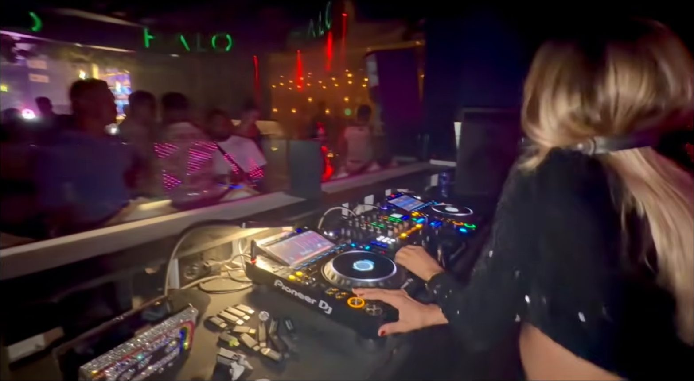
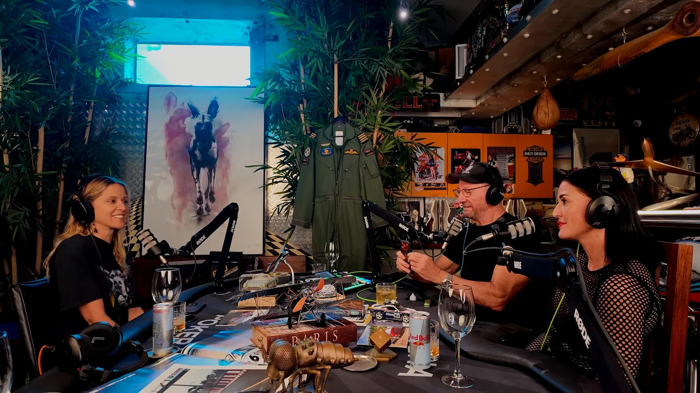
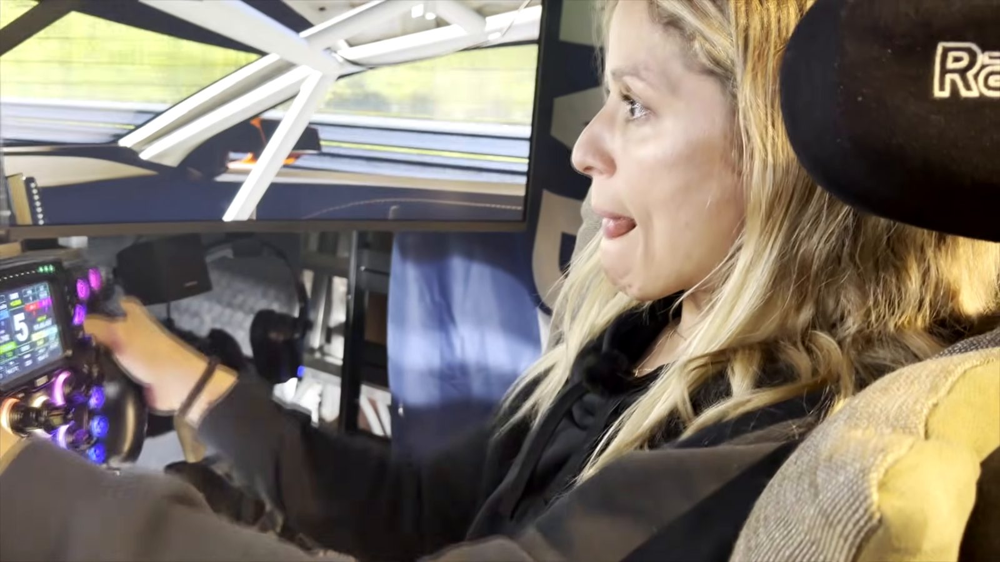

Music / DJ Culture
From Brazil to Cape Town: DJ life, pay gaps and hot laps
Kat Luz on a first set booked while selling cakes, carrying 20 USBs to every gig, the residency she lost to a broken-down car, and what undercutting does to Cape Town's DJ scene.

Her name is Katarina, and she is quick to correct anyone who shortens it to Cat. Kat Luz is the stage name, and she describes it as a different person: Katarina is shy and keeps to herself, while Kat Luz is the wild version, with no fear of showing emotion on a dance floor. This episode is the second in the podcast's run on women DJs, after Mika Henning, and Peter had been trying to pin Kat down for a long time. She is, in his description, one of the busiest DJs in Cape Town, and that is exactly what made her hard to book.
A guitar with no strings and a tray of cakes
Kat grew up in Brazil as the youngest in a musical family. Her older brothers had a band that played at their church, and stopped once they were out of their teens; she was the one who kept going. She found an old guitar lying around the house, put strings on it herself and taught herself to play, badly at first by her own account. She also sang. Music, she says, saved her life.
DJing came about nine years ago, before she left her home city, and it started as something to do with friends rather than a career. The turn came when she needed money. She was selling cakes for pocket money, and one of her customers, a bar owner, had heard she could sing and play guitar and asked her to perform. She told him she sang in Portuguese and didn't know songs in English, but that she could DJ. He told her to come the next day and play from three in the afternoon until seven. She had no USB sticks and no music ready. She said yes anyway, and worked it out from the basics she knew.
Open format, and twenty USBs
Kat calls herself an open-format DJ rather than a techno DJ or an Afro house DJ: she can play anything, and being adaptable is, she thinks, a big part of why she is so busy. Her own roots are R&B, Michael Jackson, James Brown, funk and soul, reggae and reggaeton. She pays close attention to time slots, because what suits nine o'clock doesn't suit midnight, and she has often arrived at a gig to find the DJ before her already playing peak-time music far too early, leaving her to bring the room back to where it should be.
She tries to play two shows a night and sometimes ten or more events a week, and the day before recording she played a private event for eight hours straight. She is known among other DJs for turning up with 20 USB sticks and two hard drives so she is ready for anything. Private events, weddings especially, pay better than clubs, and she understands why. A wedding is a day in somebody's life. A bad night in a club passes, she says, because everyone is drunk anyway; a bad wedding is somebody's wedding.

She describes her job as working the crowd rather than standing behind the decks. Even with nobody on the floor, she dances, and people come in once they see it. She is proud that the people at the front of her sets put their phones down and dance, and she says she doesn't want to be an "Instagram DJ". At her sets she often invites women from the crowd up behind the booth, which changes the energy of the room. Peter saw it at one of her recent sets: at least five women in the booth behind her and a dance floor so full he couldn't move.
Dressing the part, or not
Rebecca Sky joined the start of the conversation. She sells real estate during the day and came dressed as her alter ego, DJ Rebecca. She grew up around the club scene, dancing on the speakers as a sixteen-year-old while her long-term boyfriend played his sets, and says it never once crossed her mind that she could be the one on the decks. She asked Kat what she would tell women who want to DJ now, pointing to Charlotte de Witte, who, as Rebecca put it, became the first woman to close Tomorrowland in 2024. Kat's answer was to follow the interest and keep studying. She still listens to other artists every day and learns from the DJs she swaps with in the booth.
Rebecca raised the question of how women DJs dress. Kat's view is that she dresses up for some shows, the ones she treats as important, and not for others. At a festival she is there for the music and the people dancing, not to be looked at. She knows the remark that women get gigs because of how they look, and she rejects it: she would rather people leave saying she was a great DJ who made them enjoy the whole set. She admires friends who do dress up, singling out her friend and fellow DJ Minkx, but says she goes for the music.

Paradisco and Bazique
Her favourite party in Cape Town is Paradisco, run by the Disco Pirates, a pair of long-standing South African disco producers known for remixing music from the sixties to the nineties. The edition she had just played was for Women's Day, with an all-women line-up. She opened the night, which is usually the quiet slot, and still had a crowd that came early to see her. What she likes about Paradisco is the production: the decoration, the dancers, the photographers and videographers, and the sound system.
She had only recently played her first South African festival, Bazique. In Brazil, she says, nobody dresses up for a festival: people go in bikinis, with no make-up and messy hair. She arrived at Bazique with one dress and two pairs of trousers, barefoot, and her friends took one look at her and started dressing her up. Her only complaint about playing festivals is that she has to leave them afterwards.
Real files, not YouTube rips
Kat is particular about where her music comes from. She buys her tracks, usually from sites like Beatport and priced in dollars, and downloads the best quality available, lossless formats like FLAC rather than MP3s. She won't play anything ripped from YouTube, and she won't play unreleased music the producer hasn't put out yet. In a lot of clubs the sound system isn't good enough for most people to hear the difference, but she can, especially when she plays back to back with a DJ using low-quality files.
She finds her music through research, not by scrolling Instagram: she sits at the computer and works through tracks, old and new, until she finds the one that matches her energy. Newer DJs often ask to photograph her track list, and she doesn't mind; she has offered to share her music with them. Her only point is that the hours of work behind it are real. Peter compared it to learning to fly: you don't become a pilot on a simulator alone. He added his grandfather's advice, that the way to move up in any trade is to teach the people coming up behind you to do your job.
"I don't even want to own any music. I want to share everything I have."
That is also the aim of the production work that now takes up much of her time. She isn't trying to rival producers like Charlotte de Witte, whom she credits with years of sound engineering behind them. She wants to make something new with real musicians rather than assembling tracks from bought sample packs, which she thinks is too easy.
The gig she lost
Kat lost a residency at a well-known Cape Town venue, and the way it happened is why she is so careful about who she trusts. On the way to a six o'clock set, her car broke down. She phoned Funky G, a friend she rates as one of the best DJs in Cape Town, but he was booked, so he put her in touch with another DJ. She organised the sound for him. He played badly, finished early, packed up and left without telling anyone. The venue let her go, and she told them she understood. They called her back to play again later, but by then her price had gone up.
She doesn't take sick days. If she doesn't play, she doesn't earn, and 31 December into 1 January is the busiest night of her year, broken leg or not.
Playing for nothing
Peter pushed on pay. From what he hears, DJs in South Africa are badly paid, and some are turning to their own full productions, lighting rigs and engineers included, as a way to charge more. Kat agreed that festivals bring in international names whose fees are much higher, partly because they travel in from abroad. Peter saw the same pattern in aviation. South African pilots were once among the worst paid in the world, because the country was isolated and operators could get away with it; once the international market opened up, pilots found they could earn double or triple abroad. He knows local DJs who now only play overseas and treat Cape Town gigs as a holiday.
The bigger problem, both agreed, is people working for nothing. Peter has seen freelance pilots offer to fly a long-haul trip for just the cost of their accommodation, which undercuts everyone who has spent a career building the skill. Kat sees the same with DJs who play for free or for a few drinks. There is no union or agreed minimum rate in Cape Town, she says. Bookings often go to friends of the people who own the venue, and she has watched DJs given good slots at good events who didn't know how to use the CDJs. That is bad for the industry, she says, and bad for the club owners too. She also notes that payment can be slow: sometimes she waits a long time to be paid.
A real simulator
Like every guest on the show, Kat took a hot lap in Peter's racing simulator, in the same car with the same time allowed. She expected a video game and found a real feeling instead. Peter warns every driver not to let go of the wheel, because the force feedback is strong enough to break a finger if the car hits a wall, which mattered to someone who needs her hands for work. Peter's own lap time is 1 minute 45 seconds. The fastest anyone has gone is 1 minute 44.5, set by Michael Stephen, whom Peter rates as probably the best all-round racing driver in South Africa.

Peter's own path
Kat turned the questions round and asked Peter what made him become a pilot. He started out as a research and development chemical engineer, specialising in combustion and cryogenics, and in atomic absorption spectrophotometry. As a child he watched the space programme, cut his hair short like the astronauts and wanted to be one. As a South African, that wasn't possible, and his parents, both school teachers, couldn't afford flying lessons. He finally paid for a private pilot's licence at 28, then took his commercial licence "just for fun", working on it part time alongside his engineering job.
Then a friend bought a large corporate jet and asked Peter to fly it. Peter said he couldn't afford the type conversion; the friend offered to pay for it. Peter left his engineering career on the spot. His grandfather had once asked him what he wanted from life, and when Peter said he wanted to see the world but couldn't afford to travel, he told him to put himself in the mainstream of opportunities: picture a fast-flowing river, and when an opportunity floats past, either jump on or watch it go. Flying meant being paid to travel. Peter set himself one condition: not to fly small aircraft around South Africa, but the most advanced non-military jet in the world. He became one of the least experienced pilots anywhere to go straight into a Gulfstream, and he retired as one of the most experienced Gulfstream captains in the world.
Kat Luz posts where she is playing next on Instagram at @katluzdj. She and Peter have already agreed on the next episode: Kat and Minkx together, with the decks brought into the studio.